Local review only. A soft studio reflection image, one warm key light, ACES tone mapping, and lightweight interior/groove cavity shading. Existing glaze parameters, geometry, tools and firing behavior are unchanged.
Phone proxy: 390×844, DPR2 (renderer cap1.65), Chrome with 4× CPU throttling. Median frame interval ~16.7ms before and after. This does not validate a real phone GPU. Phone startup rose from 1494ms to 1786ms; desktop after-startup was an outlier at6038ms. Environment convolution runs once at startup.
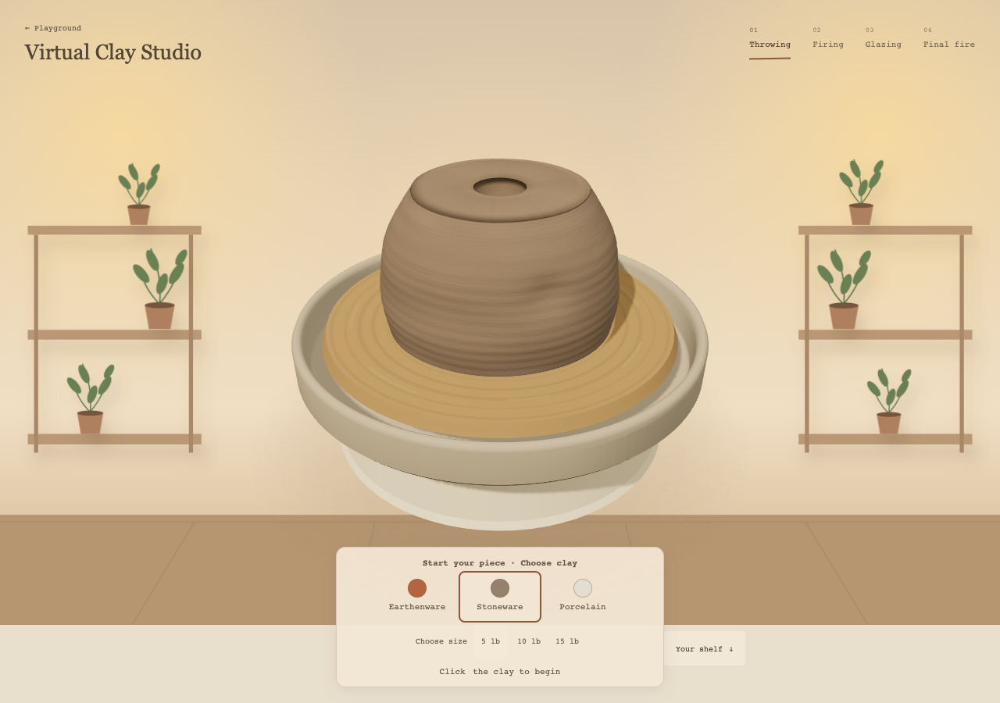
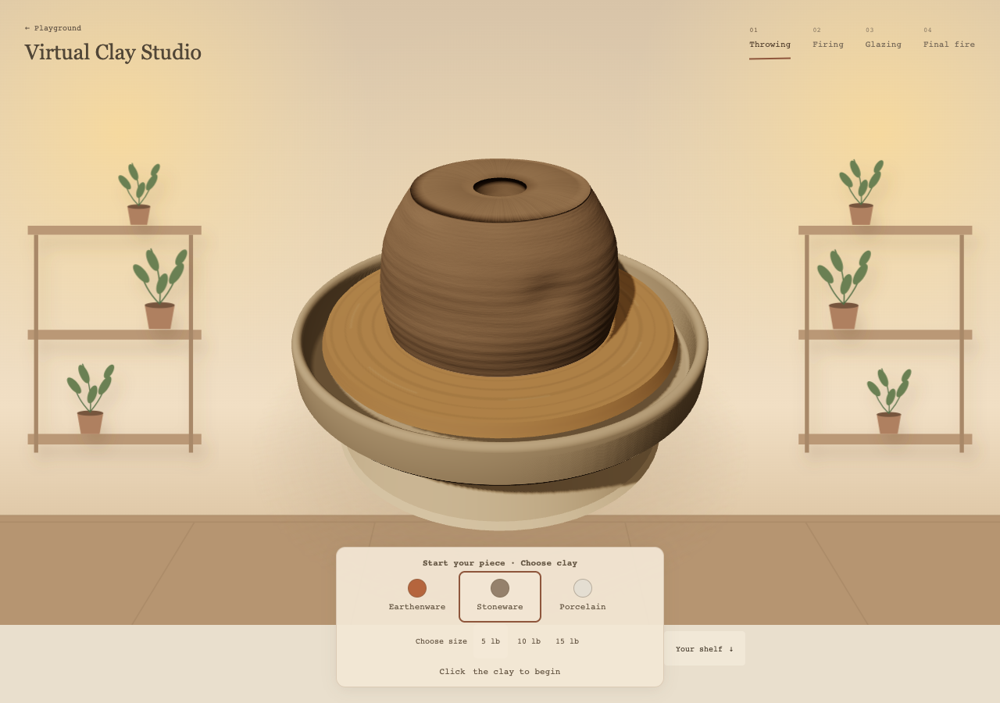
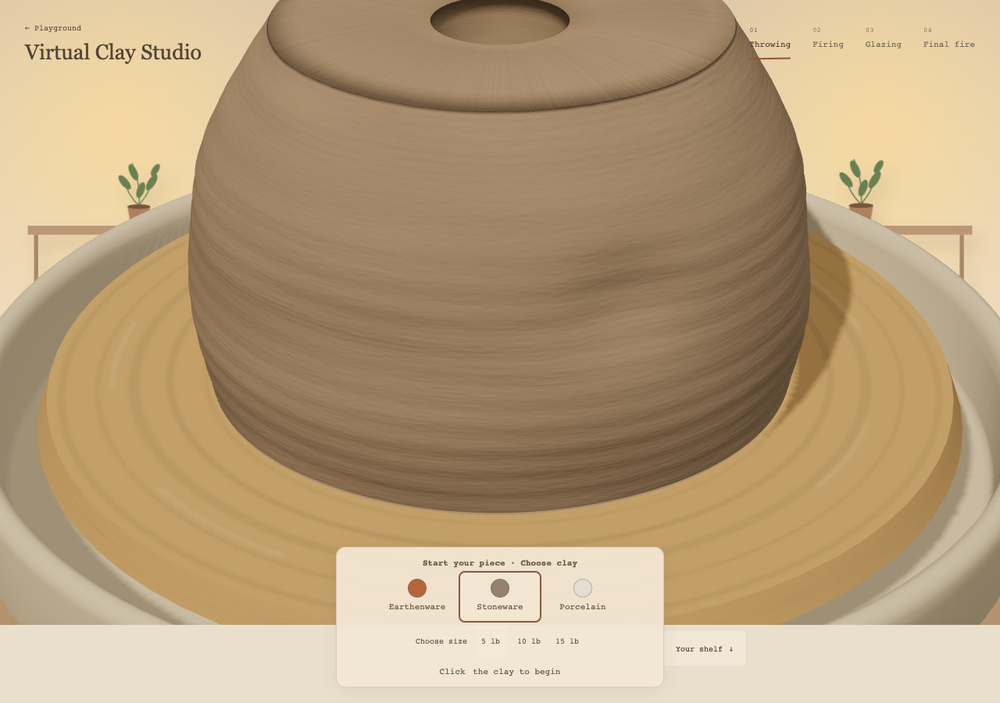
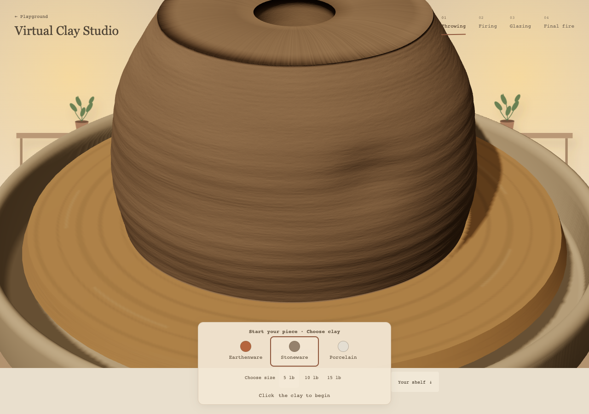
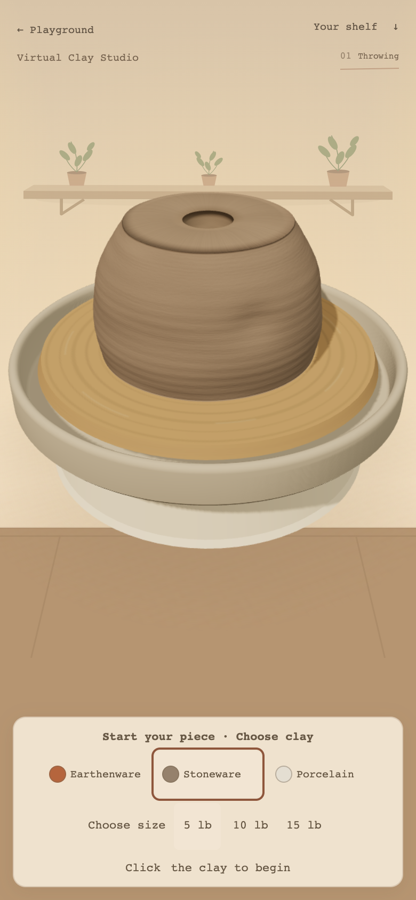
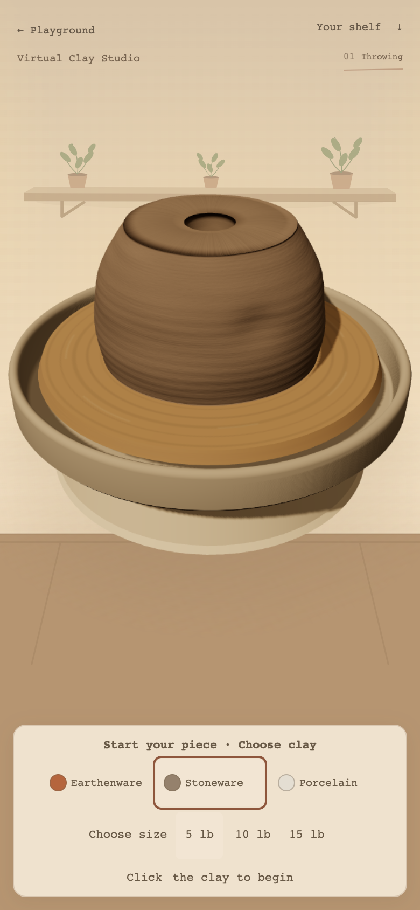
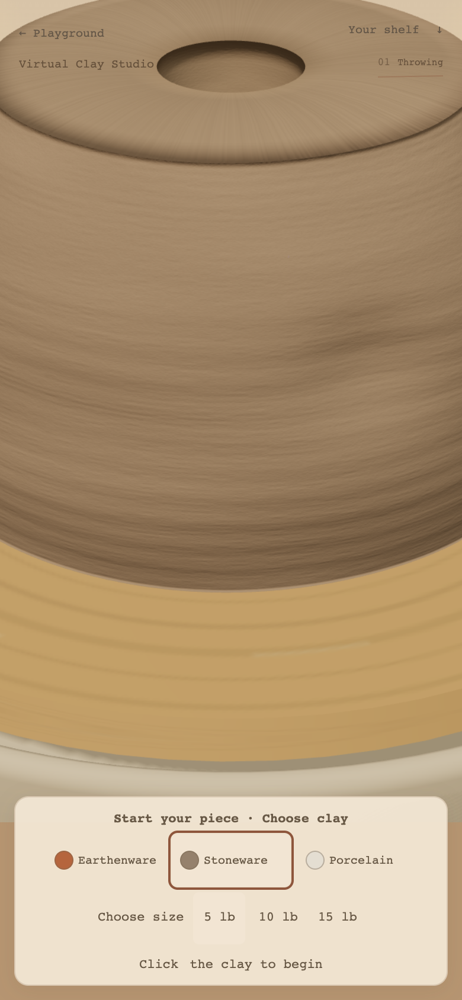
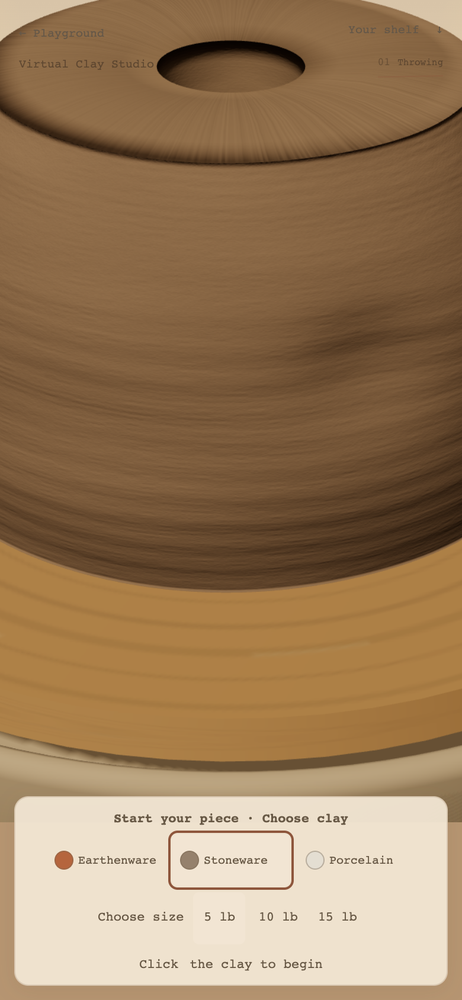
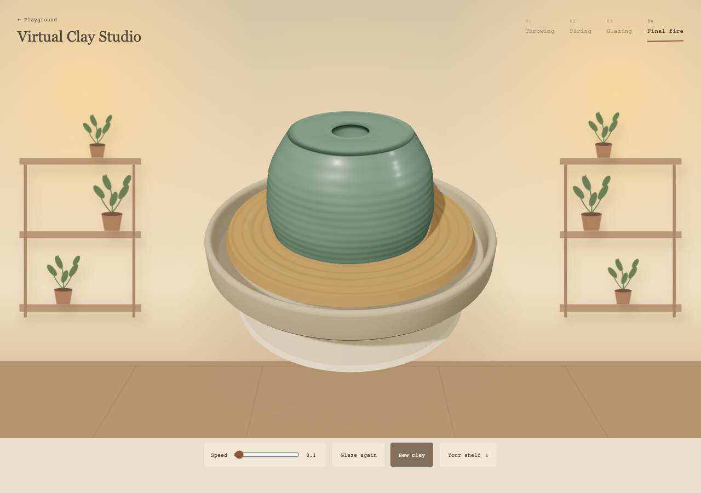
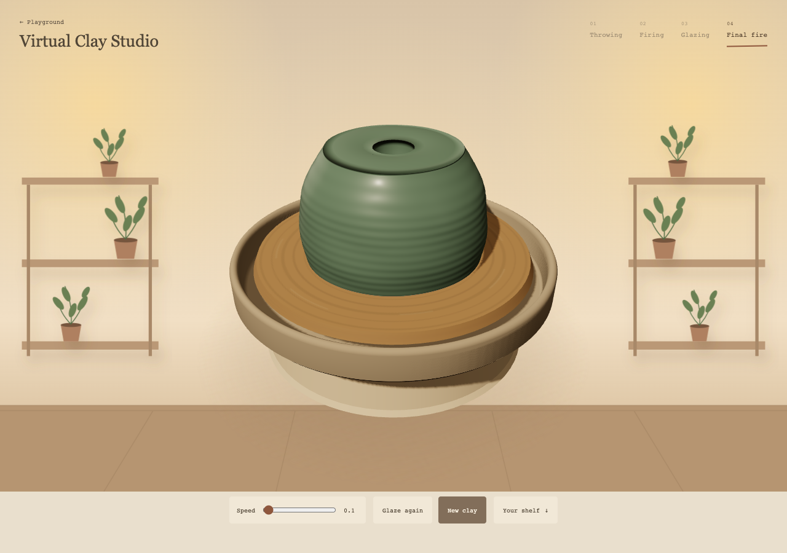
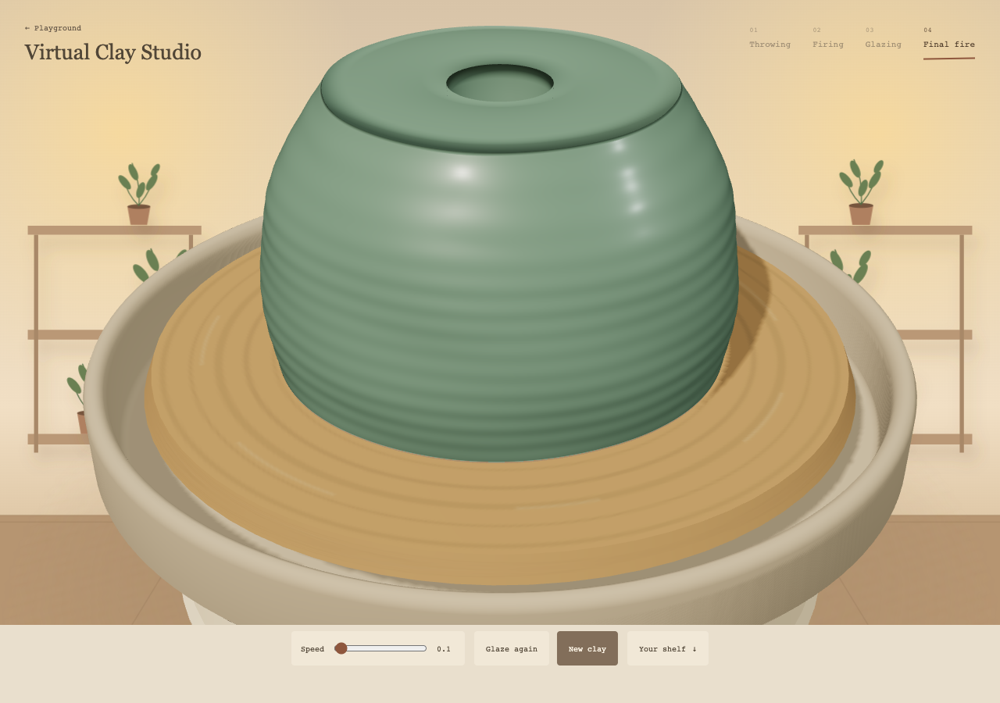
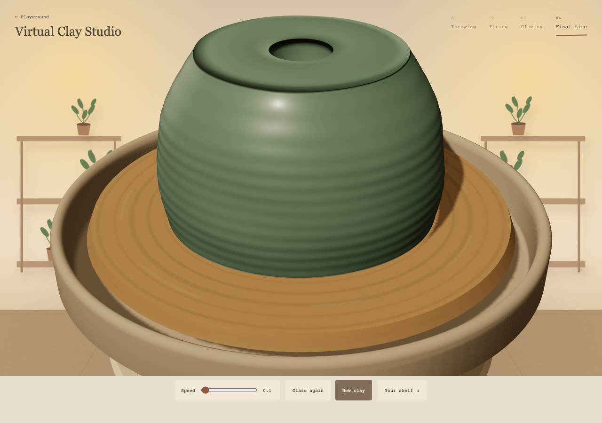